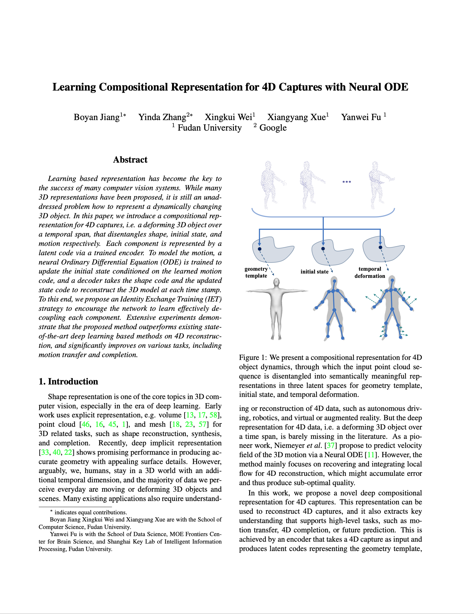
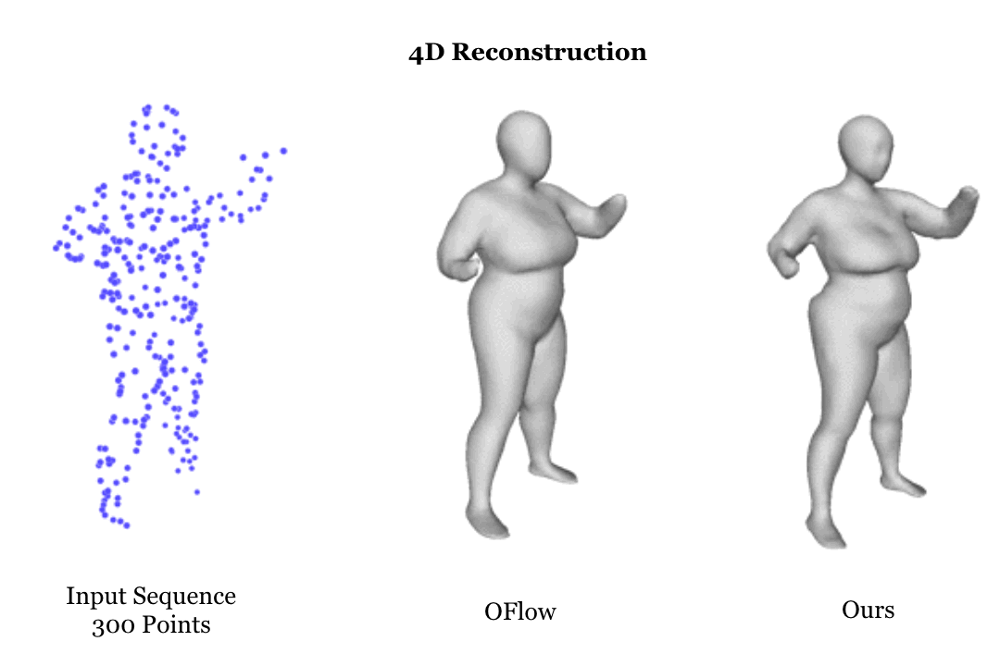
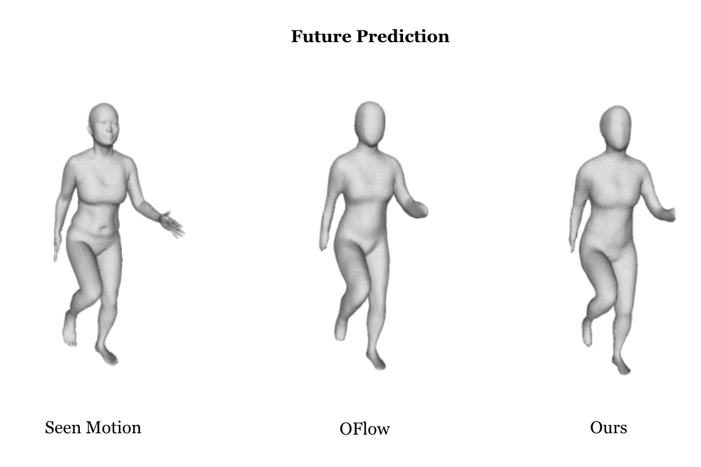
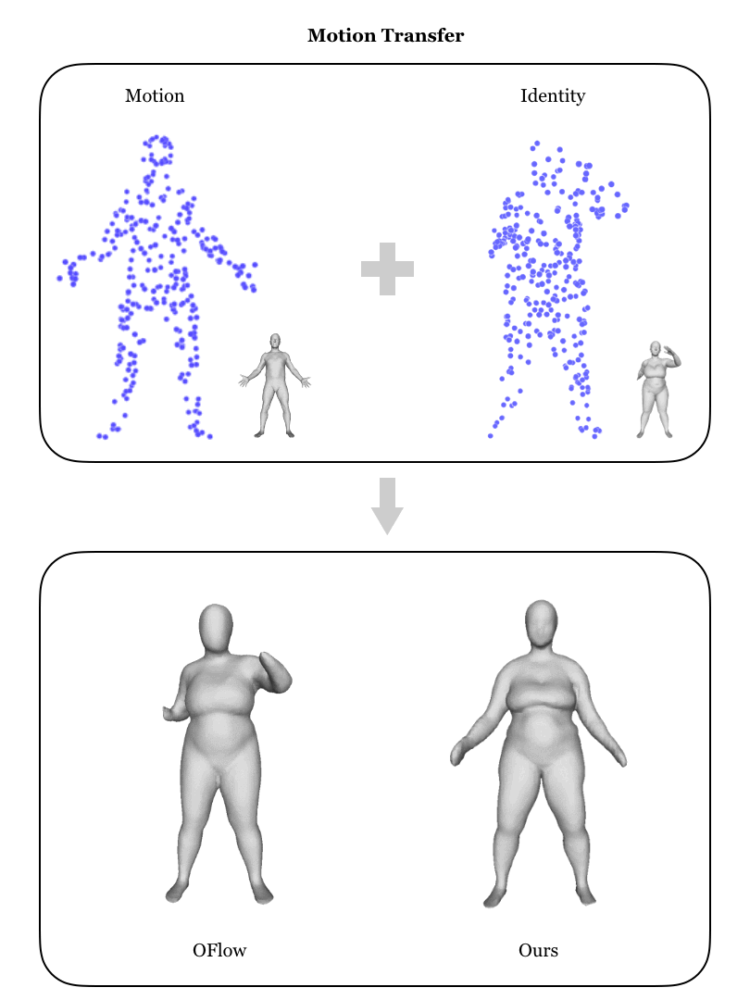
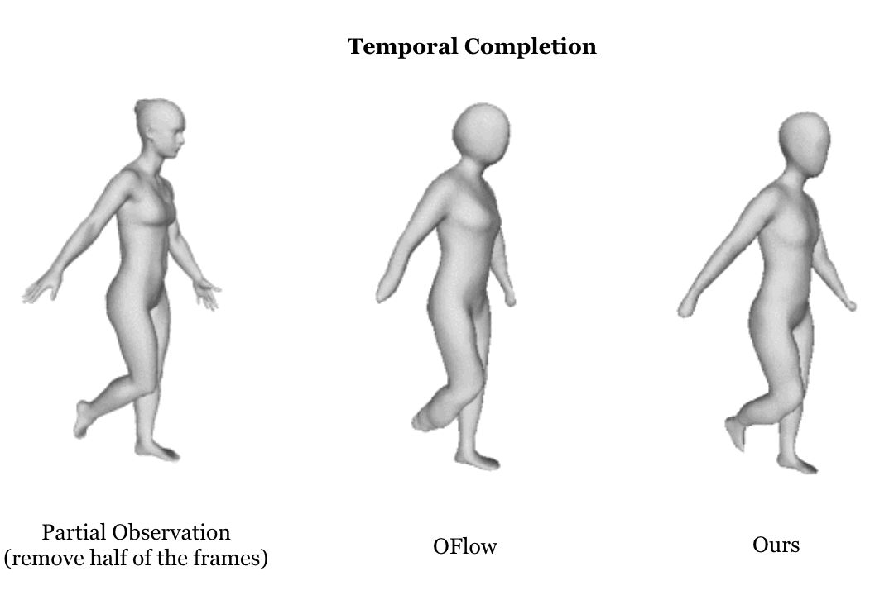
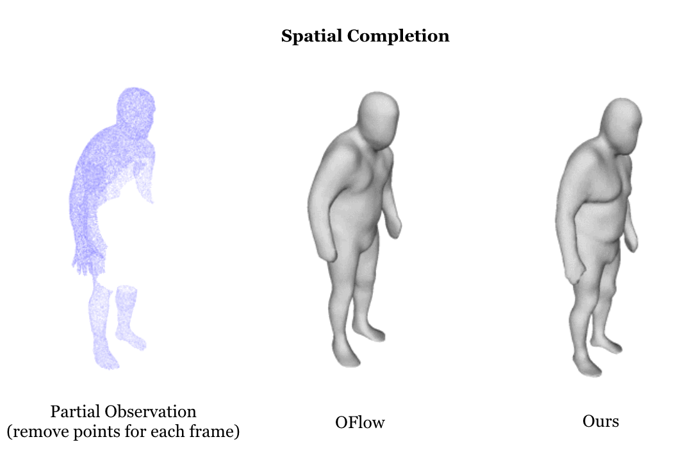

|
The Hong Kong University of Science and Technology Deakin University VinAI Research Woven Planet North America, Level 5
|
|
Overview of Our Joint Learning for 4D Reconstruction and Flow Estimation.
|
Object reconstruction from 3D point clouds has achieved impressive progress in the computer vision and computer graphics fields. However, there is not much work to deal with time-varying point clouds (a.k.a. 4D point clouds). In this paper, we propose an architecture for jointly learning spatio-temporal representation for reconstruction of 4D point clouds and estimation of motion flows in the point clouds. The key idea is simultaneously learning spatial structures and temporal vector fields from a sequence of point clouds with the purpose that each task can complement the other, leading to the improved overall performance. The proposed framework can be adapted to both supervised learning and unsupervised learning. To prove this ability, we design a temporal vector field learning module using unsupervised learning approach for flow estimation, leveraged by supervised learning of spatial structures for object reconstruction. Extensive experiments and analyses on benchmark datasets validated the effectiveness and efficiency of the proposed method. As shown in experimental results, our method achieves state-of-the-art performance on both flow estimation and object reconstruction task while performing much faster than existing methods in both training and inference phase.
|  |
Tuan-Anh, Vu and Duc-Thanh, Nguyen and Son-Hua, Binh and Quang-Hieu, Pham and Sai-Kit, Yeung
Joint Learning for 4D Reconstruction and Flow Estimation of Point Clouds ECCV 2022 [arXiv] [GitHub] |
Video |
|


|

|


|
Acknowledgements
Sai-Kit Yeung is the corresponding author. This work was supported in part by
The website is modified from this template.
|